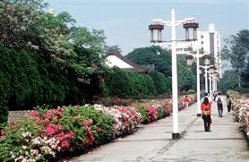

淡江大學簡介
淡江大學創立於1950年，是台灣歷史最悠久的私立大學之一，校園建築融合了現代與傳統風格，展現了獨特的校園文化與氛圍。
淡江大學擁有淡水、台北、蘭陽和網路四個校園，其中淡水校園以其依山傍水的美麗景觀聞名，校內的建築設計充分利用了地形優勢，創造出層次分明的校園空間。
淡江大學淡水校區
著名建築
覺生紀念圖書館
覺生紀念圖書館是淡江大學的標誌性建築，由著名建築師陳其寬設計，於1993年落成。圖書館採用後現代主義風格，外觀以白色為主，象徵知識的純淨與光明。

文學館
文學館建於1970年代，是淡江大學早期的重要建築之一。建築風格簡約現代，內部設有多間教室和辦公室，是文學院的主要教學場所。
商管大樓
商管大樓是淡江大學較新的建築之一，採用現代化設計，配備先進的教學設施。大樓內設有多間多媒體教室、電腦教室和專業實驗室。
建築歷史
1950年
淡江英專成立
淡江英專在台北市成立，這是淡江大學的前身。當時的校舍十分簡陋，主要是租用的民房。
1958年
遷至淡水校園
學校遷至淡水現址，開始建設第一批校舍，包括行政大樓和幾棟教學樓。
1980年代
校園擴建
隨著學校發展，進行了大規模的校園擴建，新建了多棟教學樓和學生宿舍。
1993年
覺生紀念圖書館落成
由著名建築師陳其寬設計的覺生紀念圖書館落成，成為淡江大學的地標建築。
2000年代
現代化校園
進入21世紀，淡江大學持續更新校園設施，建設了多棟現代化教學大樓和研究中心。
圖片集
淡江大學正門

宮燈大道
覺軒花園
工學大樓
體育館
學生活動中心